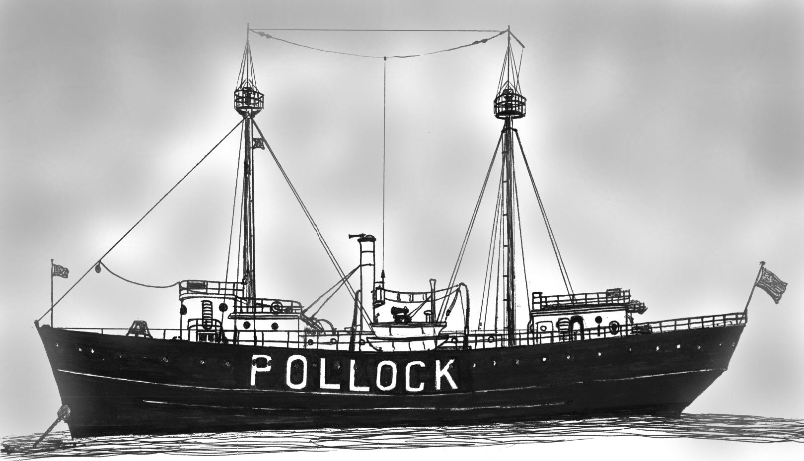

Link Index
MWDC
Home Page
Shipwrecks Page
Albert Galatin
Alice M. Colburn
Alice M. Lawrence
Ardandhu
Barge and Crane
California
Charles S. Haight
Chelsea
Chester Poling
City of Salisbury
Corvan
Dixie Sword
Edward Rich
French Van Gilder
Henry Endicott
Herbert
Herman Winter
Hilda Garston
HMCS St. Francis
James Longstreet
John Dwight
Kershaw
Kiowa
Lackawanna
Lunet
Mars
Pemberton
Pendleton
Pinthis
Port Hunter
Pottstown
Romance
Seaconnet
Trojan
USS Grouse
USS New Hampshire
USS Triana
USS Yankee
|

Description: Lightship; steel
Dimensions:
length - 123 ft. 9 in.
width - 28 ft. 6 in.
depth - 14 ft. 9 in.
Tonnage:
gross -
other - Displacement - 693
Propulsion: Steam; propeller; rigged with auxiliary sail when built
Machinery: Single 400 Indicated Horsepower compound engine
Cargo: N/A
The Shipwreck
Date Sunk: September 14, 1944
Cause: Hurricane
Location: Three miles west of Cuttyhunk
Coordinates:
Latitude, 41o - 23' - 47.40"N
Longitude, 71o - 01" - 12.60"W
Loran: 14289.6 and 43931.3
The evening of September 14th hurricane force winds whipped seas to a mountainous furry off the southern New England Coast. Safe in their homes, residents of Westport Harbor witnessed bright lights in the sky west of Cuttyhunk, near where the Vineyard Sound Lightship, marking the entrance of Buzzard's Bay and Vineyard Sound, was moored. The next morning the Light vessel was gone. At first Coast Guard officials reported only that the lightship was "off Station". It being wartime and fearing public hysteria, a media blackout was in effect until the exact cause of the vessel's sinking could be determined.
Were the lights seen a desperate attempt by her crew to signal for help?
Was the ship rammed and sunk in the gale, a fate not uncommon to lightships?
or did a lurking German U-boat torpedo the unarmed vessel?
The steamer's fate was not determined until September 23rd when Navy Divers found the sunken hulk. Although her masts and funnel were snapped off at the deck the mooring chains were still secure indicating the lightship foundered while on-station.
It was theorized that doors used to load coal through the hull had collapsed under pounding seas, flooding the ship. However, when sport divers first located the hull 19 years later, that theory could not be substantiated. It was discovered that hull plates in the vicinity of where the storm anchor had hung at the bow, were stove in. Normally the 3 to 5 ton mushroom anchor is let go in intense weather. If the crew were unable to accomplish this, high seas would have slammed the anchor against the hull.
Back to Top
Dive Site Conditions
Depth in feet:
maximum - 80;
minimum - 46
Visibility in feet:
average -
When first investigated by Brad Luther and members of the Fairhaven Divers Club, in 1963, the bow and stern were intact. The main deck had deteriorated exposing the second deck and sand had filtered into the engine room choking access.
At that time the ship's binnacle and compass were recovered.
Back to Top
Historical Background
Constructed:
year - 1901
where - Baltimore, Maryland.
builder - Spedden Shipbuilding Co.
Construction details:Steel hull; two masts; stack amidships.
-1910: Submarine bell signaling device installed.
-1919: Outfitted with two-way radio.
-1920: Illumination device changed to three "oil lens lanterns" clustered together and hoisted to each masthead.
-1928: Fitted with radio beacon.
-1929: 375mm electric lens lantern installed in gallery at each masthead replacing oil lanterns.
-1931: Fitted with new coal bunkers; 2 oil engine driven compressors; Water tube boilers replace originals; Fog signal changed from steam to air whistle.
Crew: 17
Master: WO Edgar Sevigny (1943-1944)
Owners: United States Government
Home or Hailing Port:
Former Name(s), date(s): ?
STATION ASSIGNMENTS:
1902-1913: Pollock Rip Shoals
(Aug 19, 1913, Pollock Rip Shoals station renamed Pollock Rip Slue)
1913-1923: Pollock Rip Slue
1923-1924: Pollock Rip
1924-1944: Vineyard Sound
Official number: LV 73; WAL503
Country: U.S.A.
Other Comments:: CONTRACT PRICE: $79,872; same hull plan as LV 72.
1913, Jun 8; took aboard 2 exhausted men who had been adrift and lost in fog for 3 days from fishing schooner Washakie.
1923: Officers and crew commended for rescuing 2 men lost and adrift from fishing schooner Rob Roy.
During WWII remained on Vineyard Sound station, no armament provided.
1944: Lost with 12 of her 17 crewmen (five on leave).
1963, September: Using an experimental "side scanning" sonar device he recently developed, Professer Harold E. Edgarton of the Massachusetts Institute of Technology, found the lightship in 80 feet of water.
Back to Top
Salvage
United States Government Vessel - Salvage Prohibited
Back to Top
Sources:
Automated Wreck and Obstruction Information System: NOAA
Lightships and Lightship Stations of the United States Government: Willard Flint, 1989
The Fisherman, magazine: August 11, 1988
Back to Top
These files are under construction. Any information, specifically dive site related, would be greatfully appreciated.
Send comments to: Chris Hugo
Copyright © 2000 by Christopher C. Hugo
Massachusetts Board of Underwater Archaeological Resources
All Rights Reserved
See also http://www.uscg.mil/hq/g-cp/history/WEBLIGHTSHIPS/LV73.html
See also THE DEATH AND VIRTUAL RESURRECTION OF THE VINEYARD LIGHTSHIP
|